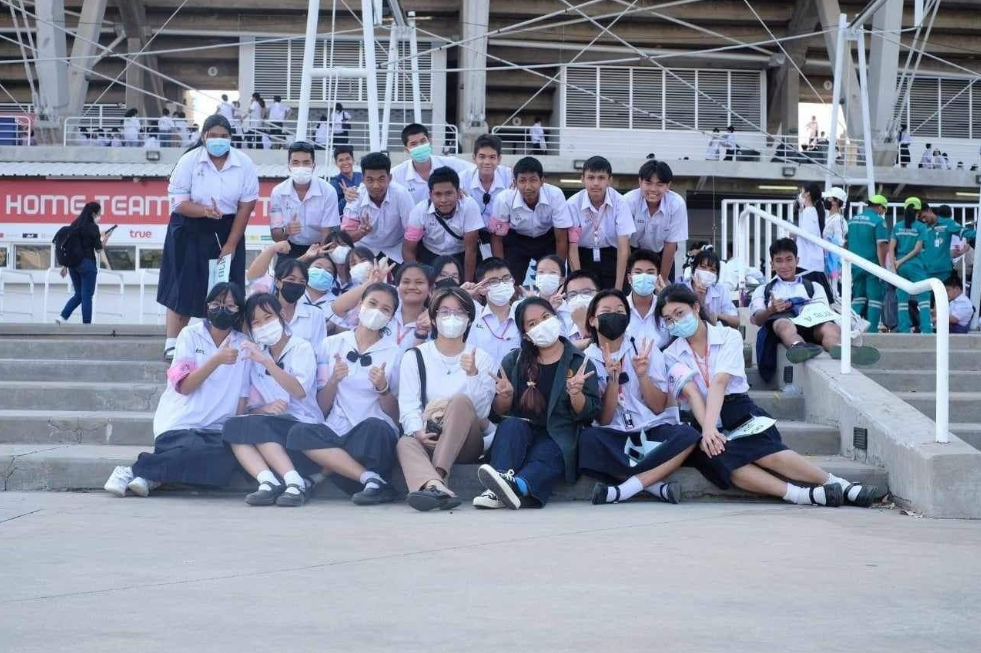
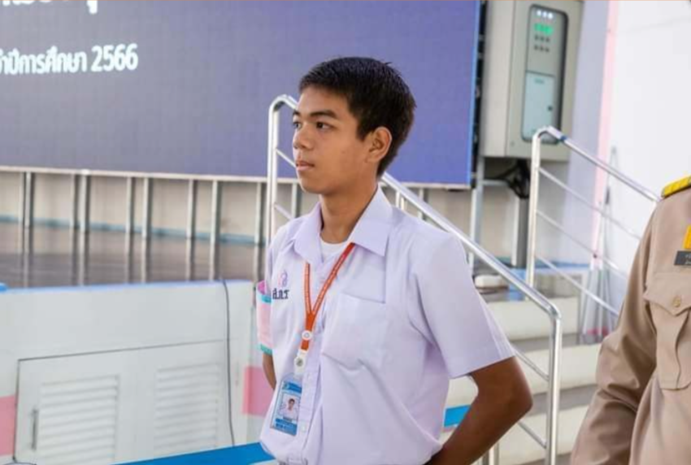

Greeting! Let me introduce myself My name Thanawat Kulapun
Nickname Makarov or Mark as you like I’m 18 years old. I’m from Thailand so it’s mean that I’m Thai. My birthday is the 8th of May 2006. I’m a student at Suankularbwittayalai Rangsit School. My school is in Pathum Thani. My favorite color is Red ,Orange and Yellow (because I love hot color tone) I want to visit Germany, Japan and China.
My favorite food is Pizza and Japanese curry. My favorite fruit is Apple, Banana and Pineapple. but I like all delicious food I eat
what I have But I want to try a Baguette of France sometime it must be really tasty I’ve heard it’s solid.
I used to study at Sarasas Witaed Klongluang when I was in childhood all the way long for 9 years at the same place. I see a lots of Change during 9 years such as more and bigger canteen, Music room that never has before, more school building, football field, child playground and much more I can’t tell you all. My school life is great I got a 4.00 grade all the years and 1st place in the class. This school has no beautiful place or landmark but a fountain, but not much to remember because the school fuse was completed so I’m a OSWK 9.
I think my special ability is memorization, I have a good memory from childhood while I was study at my old school, Sarasas Witaed Klongluang when teacher taught me something, I remembered it all. That why I got first place in the class so I think it must be my special but then when I start my M.1 class at Suankularb Wittayalai Rangsit School I almost failed my Final exam and almost in the last of the class so I start to think that Is my memorization my special ability?
In my holiday, I went to Krungthep with my family. I went to Krungthep by car. It took about 3 hours. After that my family ate noodles. Next my family went to temple. After that my family went to visit my grandfather. Next My family went to a restaurants with my grandfather. My family ate Noodle with my grandfather. My family took my grandfather to his house. After that my family went home. I was very happy an I had a lot of fun.
Portfolio

I have been working as a student inspector to take care of the security of the place. In the Suankularb Athletics Activity
at Thammasat Stadium for the academic year 2022

I served as a student inspector at the election day of the student president.
Academic Year 2022